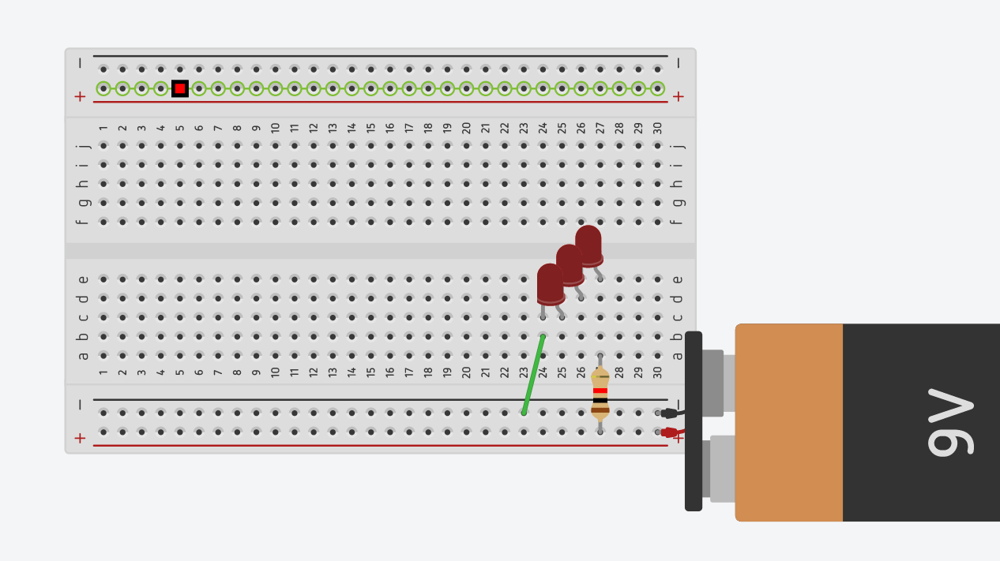
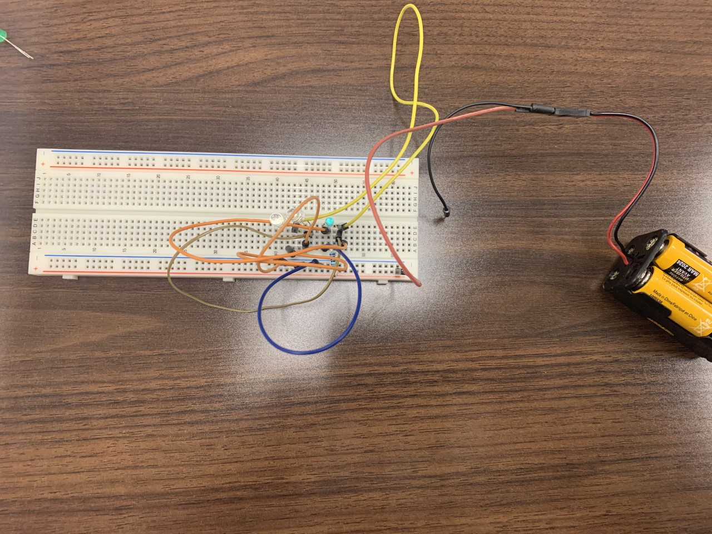

Welcome to the first page of my documented journey through the basics of Mechatronics! We did 2 things this week, learning about the basics of electricity, including current, voltage, and resistance as well as 2 main types of circuits.
Basics #
Current: Current is the rate of flow of electrons through a circuit, and is measured in amperage (amps). If you think of the circuit as a loop of water, the current is the speed of the water.
Voltage: Voltage is the power of the current, or how much work the electricity in the circuit can do, and is measured between two points on the circuit. In terms of our analogy, the voltage is the water pressure. Voltage is provided by the power source of a circuit.
Resistance: Resistance is the opposition to the flow of electrons in a circuit, and can be measured in ohms. Resistors are objects which provide resistance in a circuit, such as resistors, which convert electrical energy into heat energy, or lightbulbs, which convert electricity into heat and light. In our water analogy, a resistor would be like a water wheel, changing the water’s momentum into something usable.
These 3 basic electrical terms can be related with Ohm’s Law, V=IR, where voltage (V) is proportional to current (I) times resistance (R)
Tinkercad #
We created a few circuits in Tinkercad to explore the basics of circuits. We learned about 3 varieties of circuits, series, parallel, and analog. Series circuits require all resistors to be arrange such that the current only can take one path. Parallel circuits are different, arranging resistors such that instead of taking one path, it can take many simultaneously, and if one resistor is removed or damage, the others will continue to function as normal. Analog circuits are circuits which include signals that can be changed variably in a continuious, rather than binary (digital) fashion. Analog circuits can be either in series or parallel.

This is a basic series circuit. As you can see, the LEDs are arranged on the breadboard such that current can only flow in one path through them.

This is a basic parallel circuit. The current has multiple paths to flow through, so if one LED burnt out, the others would continue to provide light.
Building Circuits #
After building these in Tinkercad, we created one of them with a breadboard hands on!

Note that in the first picture the LEDs are not lit up, this is because I unplugged the negative wire in order to better show the wiring.